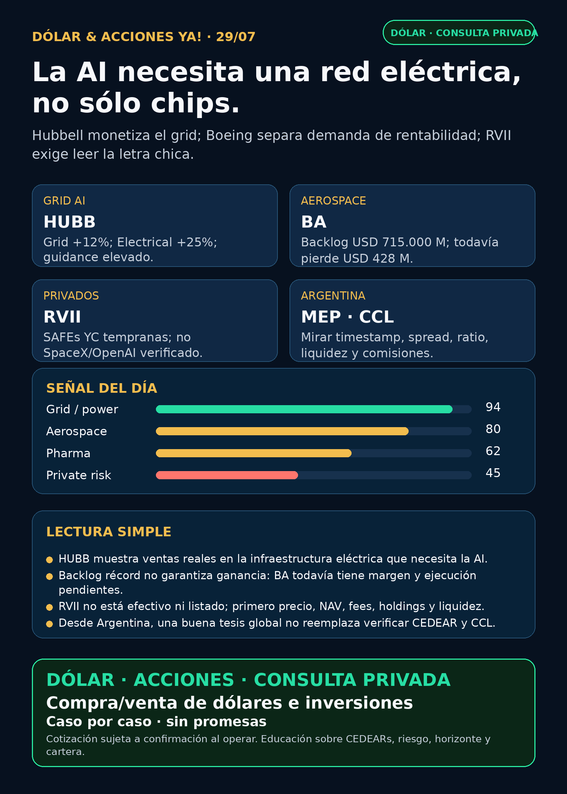

La AI necesita una red eléctrica, no sólo chips.
Hubbell, Boeing y Robinhood Ventures Fund II: grid para AI, aerospace industrial y privados con letra chica.
Texto WhatsApp
Placa del día

Dólar & Acciones YA — Stock Radar — 29/07
Fecha de edición: 2026-07-29. Research educativo para Argentina y carteras globales. No es recomendación personalizada de compra ni de venta.
Lectura simple del día
La señal más limpia está en Hubbell (HUBB), una empresa que vende piezas críticas para redes y distribución eléctrica. Sus números muestran que la demanda ligada a modernización del grid, crecimiento de carga y data centers ya está llegando a ventas reales. En criollo: antes de encender una GPU hay que llevarle electricidad de forma segura, y ese trabajo tiene proveedores con negocio concreto.
También hay una lección útil en Boeing (BA): un backlog enorme demuestra demanda, pero no garantiza ganancias. Y aparece un nuevo fondo de Robinhood (RVII) que empaqueta startups privadas; la letra chica confirma que “private tech” no significa automáticamente SpaceX u OpenAI.
Esto está ordenado por valor educativo/señal de radar. No es orden de compra. Buena empresa ≠ buena inversión al precio actual ≠ buen instrumento para Argentina ≠ buen tamaño dentro de una cartera.
Capa Argentina: dólar, MEP/CCL y CEDEARs
Datos públicos tomados a las 08:46 ART: - BlueLytics: dólar oficial vendedor ARS 1.521,00 y blue vendedor ARS 1.570,00; actualización 29/07 08:45 ART. - CriptoYa: USDT ask ARS 1.600,00; actualización 29/07 08:45 ART. - MEP AL30 24hs ARS 1.532,06 y CCL AL30 24hs ARS 1.613,33; ambos con timestamp de cierre del 28/07 16:59 ART, por lo que no se presentan como precio intradiario del broker.
En criollo: el MEP es una forma regulada de pasar de pesos a dólares usando bonos dentro de Argentina; el CCL conecta precio local y precio exterior y suele influir en los CEDEARs. Un CEDEAR representa una fracción de una acción extranjera, pero tiene ratio, spread —diferencia entre mejor comprador y vendedor—, liquidez, comisiones y CCL implícito. Para mover plata real se confirma precio y book en IOL/PPI o broker vivo.
HUBB, BA, RVII y varios nombres de power hardware son accionables globalmente o potencialmente globales, pero su acceso local no se verificó en esta corrida. Si no hay CEDEAR líquido o instrumento claro, quedan como radar educativo/global; no como ejecución Argentina.
Tesis central
La AI necesita red eléctrica, no sólo chips. HUBB convierte la tesis de electricidad física en crecimiento operativo; GEV, ETN, PWR, VRT y MOD completan el mapa de generación, distribución, ingeniería y cooling. Al mismo tiempo, BA enseña que moat de demanda y ejecución rentable son cosas distintas. RVII y RVI muestran que un wrapper de privados debe analizarse como instrumento —NAV, fees, holdings, liquidez y premium/descuento— antes de enamorarse del relato.
Señales educativas del día
1. Grid / power hardware — Hubbell (HUBB)
- Qué pasó: Q2 2026 net sales +15%, crecimiento orgánico +10% y adjusted EPS USD 5,52 (+12% interanual). Utility Solutions vendió USD 1.026 millones (+10%); Grid Infrastructure creció 12%; Electrical Solutions llegó a USD 686 millones (+25%, orgánico +18%). Hubbell elevó su guía de adjusted EPS FY2026 a USD 20,25–20,55 y espera crecimiento orgánico anual de 9–11%.
- Fuente primaria (28/07): SEC Exhibit 99.1: https://www.sec.gov/Archives/edgar/data/48898/000162828026049934/exhibit991_07282026.htm
- Lectura en criollo: el segundo peaje de la AI es electricidad física: conectores, distribución, protección y modernización de red.
HUBBmuestra ventas reales, no sólo una presentación temática. - Riesgo: presión de márgenes por materias primas, aranceles, inflación y reestructuración; free cash flow Q2 bajó a USD 213 millones desde USD 221 millones. La compra de NSI por aproximadamente USD 3.000 millones suma deuda y riesgo de integración.
- Accionable internacional/global: acción USA
HUBB; antes de análisis humano faltan precio/valuación, deuda post-NSI y sensibilidad del ciclo. - Accionable local Argentina: CEDEAR, ratio, liquidez y spread no verificados. Estado local: no accionable por ahora.
- Estado: señal fortalecida / candidato nuevo de radar fuera de watchlist.
2. Defensa / aerospace industrial — Boeing (BA)
- Qué pasó: Q2 revenue USD 24.560 millones (+8%), 171 entregas comerciales, operating cash flow USD 1.364 millones y free cash flow no-GAAP USD 631 millones. El backlog total alcanzó un récord de USD 715.000 millones, con más de 6.200 aviones comerciales.
- Lo que sigue roto: net loss USD 428 millones, pérdida diluida USD 0,67 por acción y margen operativo de Commercial Airplanes negativo en 2,7%.
- Fuentes primarias (28/07): SEC Exhibit 99.1: https://www.sec.gov/Archives/edgar/data/12927/000162828026049929/a202606jun308kprex991.htm ; Boeing IR: https://investors.boeing.com/investors/news/press-release-details/2026/Boeing-Reports-Second-Quarter-Results/default.aspx
- Lectura en criollo: backlog es trabajo contratado o comprometido hacia adelante, no ganancia ya cobrada. La demanda es fuerte; la tesis depende de convertir pedidos en entregas, caja y margen sin nuevos shocks de calidad o certificación.
- Accionable internacional/global:
BAdirecta en USA. El dato fortalece demanda, no prueba que el turnaround terminó. - Accionable local Argentina: existencia y liquidez del CEDEAR no fueron revalidadas hoy; confirmar en broker.
- Estado: fortalece demanda / vigilar ejecución y margen.
3. Nuevo wrapper de privados — Robinhood Ventures Fund II (RVII)
- Qué pasó: Robinhood anunció roadshow público para el 03/08/2026.
RVIIsería un BDC/closed-end fund en NYSE, centrado en startups actuales o anteriores de Y Combinator o fundadores vinculados a YC. El registro todavía no está efectivo: las acciones no pueden venderse hasta que corresponda. - Portfolio verificado al 31/03/2026: NAV USD 12,068 millones o USD 24,14 por share; USD 8,85 millones invertidos en SAFEs de startups tempranas. No aparecen SpaceX, OpenAI ni Anthropic en el schedule verificado.
- Letra chica: base fee anual 2% sobre net assets + 20% de realized capital gains; activos ilíquidos/Level 3, historial mínimo y potencial descuento o premium contra NAV.
- Fuentes primarias (28/07): Robinhood Newsroom: https://robinhood.com/us/en/newsroom/RVII-roadshow-aug3/ ; SEC N-2/A: https://www.sec.gov/Archives/edgar/data/2131040/000162828026049234/rvii-nx2a1july2026.htm
- Lectura en criollo: una SAFE es un contrato para recibir equity futuro bajo ciertas condiciones; no es una acción líquida hoy. El fondo empaqueta startups muy tempranas y cobra por administrarlas. No es “comprar las privadas famosas”.
- Accionabilidad: no accionable por ahora. Falta efectividad, precio final, cantidad de shares, listing real, volumen, spread, lockups, portfolio actualizado y acceso desde Argentina.
- Estado: radar alto educativo / no accionable.
4. Riesgo instrumental — Robinhood Ventures Fund I (RVI)
- Qué pasó: Form 4 del 28/07 reportó ventas del sponsor por 21.827 shares, proceeds aproximados USD 584.884 y VWAP aproximado USD 26,79.
- Fuente primaria: SEC Form 4: https://www.sec.gov/Archives/edgar/data/2085091/000178387926000104/wk-form4_1785273623.xml
- Lectura en criollo: una venta del sponsor no prueba que el portfolio se deterioró; sí cambia la lectura de float, liquidez y alineación. Antes de evaluar
RVIse necesita NAV actualizado, premium/descuento, holdings, volumen y spread. - Accionabilidad: ticker USA público; acceso Argentina no verificado. Sin datos instrumentales actualizados, no accionable.
- Estado: vigilar riesgo de instrumento.
5. Pharma / salud — AstraZeneca (AZN) sin rellenar con GLP-1
- Señal positiva dentro de 72h: Sonesitatug vedotin mostró mejora estadísticamente significativa y clínicamente relevante en overall survival para cáncer gástrico/GEJ avanzado CLDN18.2+ en segunda línea o posterior.
- Señal negativa: Ultomiris Phase III en HSCT-TMA adulto/adolescente no alcanzó significancia estadística en event-free survival.
- Fuentes primarias SEC: https://www.sec.gov/Archives/edgar/data/901832/000165495426006895/a9459n.htm y https://www.sec.gov/Archives/edgar/data/901832/000165495426006897/a8707n.htm
- Lectura en criollo: un pipeline puede mejorar en una indicación y fallar en otra. No apareció un catalyst primario nuevo de
LLY/NVOque justifique inventar un titular GLP-1. - Accionabilidad:
AZNADR/global; faltan impacto comercial, timing regulatorio, valuación y acceso CEDEAR/liquidez local. - Estado: señal mixta; oncology fortalece y rare disease puntual debilita.
Watchlist priorizada de hoy
Ordenada por valor educativo/señal, no como ranking de compra.
- RKLB: sin filing/catalyst primario nuevo posterior al contrato Space Force ya indexado. Space/defensa estructural fortalecida, pero hoy no hay recibo superior.
- NVDA: sin filing nuevo fuerte; moat AI infra vigente. No confundir ausencia de noticia con deterioro.
- PLTR: sin contrato/revenue nuevo primario; Form 4 no es señal operativa. Valuación sigue como riesgo.
- TSM: sin señal superior al último earnings/6-K. Foundry avanzada sigue como cuello de botella físico.
- MU: CEO vendió 40.000 shares bajo un plan Rule 10b5-1 adoptado en enero. Es ruido táctico a vigilar, no ruptura automática de HBM/memory.
- GOOGL/GOOG: sin filing nuevo fuerte; cloud, TPUs, datos y distribución mantienen moat estructural.
- AAPL: titulares de capitalización son precio/valuación, no mejora del negocio. Sin primary nuevo.
- HOOD: RVII fortalece distribución y packaging de private markets, pero sube riesgo de fees, governance y conflictos.
- TSLA: robotaxi/analyst chatter sin evento company/regulatorio nuevo usable. Sin señal nueva fuerte.
- ASML: moat EUV/High-NA vigente; sin primary nuevo. ASML sí / all-in no.
- Gold / GLD / GOLD / B: instrumento todavía ambiguo. No mezclar metal, ETF, minera o ticker B.
- RVI: nueva sponsor sale; vigilar NAV, premium, float y liquidez.
- SNDK / CBRS / AVGO: sin primary nuevo superior. Tesis estructurales en storage, wafer-scale compute y custom silicon/networking siguen en radar.
Energía, grid y power hardware
- Señal nueva:
HUBBes la evidencia operativa más limpia del día. - Mapa global:
GEV,ETN,PWR,VRT,MODyHUBBcubren generación/electrificación, distribución, ingeniería, cooling y power management. Son exposiciones distintas, no una canasta intercambiable. - Transformadores obligatorios: Hitachi Energy/Hitachi (
6501.T/HTHIY), Siemens Energy (ENR.DE, no Siemens AG), GE Vernova (GEV), HD Hyundai Electric (267260.KS), Hyosung Heavy Industries/Hyosung HICO (298040.KS), Virginia Transformer y Delta Star fueron revisados. No apareció una primaria 24–72h mejor queHUBB. Virginia Transformer y Delta Star siguen privadas/no accionables directas. - Corea: el claim de aproximadamente USD 685 millones adicionales para HD Hyundai Electric quedó NO VERIFICADO porque la fuente final no fue usable. No se publica como hecho.
- Argentina:
YPF,PAMP,TGS/TGSU2,CEPUyVISTrevisadas. Los proyectos RIGI de Pampa/Vista siguen estructurales ya indexados, pero hoy no hubo primary nuevo que cambie la tesis. - Nuclear/uranio: revisado, sin señal primaria fresca superior.
Defensa / guerra física / aerospace
- Señal del día:
BA— backlog récord y cash flow positivo, con pérdida todavía abierta. - Revisados:
AVAV, GE Aerospace (GE),RTX,LMT,NOC,GD,HWM,KTOS,BA,ITA/XAR. AVAVno tuvo primary nuevo mejor que contratos ya indexados.GE/RTX/NOCmantienen backlogs y guía estructural, sin novedad superior en esta corrida.- Defensa real se evalúa por contratos, backlog, márgenes, producción, integración, certificación y presupuesto; no por narrativa bélica sola.
Pharma / salud
AZNdejó la señal útil y mixta detallada arriba.LLY/NVOGLP-1: revisados sin catalyst FDA/EMA/company primario nuevo. Targets y titulares comerciales no sustituyen aprobación, label ni resultados clínicos.PFEpriority review no es aprobación.MRKtuvo titulares reciclados, no primary fresco superior.- Biotech de alto riesgo como
VKTXqueda en radar hasta resultado/catalyst verificable; expectativa de earnings no es dato clínico.
Radar amplio fuera de watchlist
- AI infra/semis:
NVDA,TSM,ASML,MU,GOOGL,CBRS,AVGOrevisados; sin primary nuevo mejor queHUBBpara la tesis física. - Space/orbital AI:
SPCX/SpaceX, Starlink, Starship,RKLB, sat-to-mobile y wrappers revisados. Sin filing material fresco; no usarRVI/DXYZcomo proxy automático sin peso real, NAV y premium. - Autonomous mobility/physical AI: Tesla, Waymo/Alphabet, Uber, Zoox/Amazon y Joby revisados; sólo commentary secundario, sin evento company/regulatorio nuevo usable.
- Fintech/AI agents: Robinhood destaca por
RVII, no por update de Agentic Trading. Los agentes de trading siguen siendo tema educativo con datos correctos, ledger, paper mode, aprobación humana y límites; no promesa de rentabilidad. - Crypto gobernado: sin input nuevo fuerte. Se mantiene separado como educación, infraestructura y proxies regulados; no token trade.
- Private wrappers:
DXYZ,ARKVX,AGIX,XOVR,VCXy Forge revisados sin fact sheet/filing/holdings nuevo fuerte. Audit-only.
Red flags / hype para ignorar
- “AI = sólo GPU”: incompleto. También importan red, distribución, cooling, permisos, gas/nuclear y financiación.
- “Backlog récord = ganancia asegurada”: falso.
BAmuestra backlog récord y pérdida simultánea. - “RVII = acceso a SpaceX/OpenAI”: falso según el schedule verificado al 31/03.
- “Fondo privado = NAV seguro”: falso. Activos Level 3/SAFEs, fees, descuento/premium y baja liquidez importan.
- “Insider sale = tesis rota”: no automáticamente; plan 10b5-1, tamaño relativo y contexto importan.
- “Gold/GLD/GOLD/B son lo mismo”: no. El instrumento exacto sigue bloqueado hasta confirmación.
Qué mirar después
HUBB: margen, free cash flow, deuda e integración de NSI; comparación conETN,PWR,GEV,VRTyMOD.BA: entregas, certificaciones, margen de Commercial Airplanes y conversión de backlog a caja.RVII: efectividad SEC, precio final, shares, proceeds, listing, volumen, spread, lockups y portfolio actualizado después del roadshow.RVI: NAV/premium/descuento, holdings y nuevas sponsor sales.- Pharma: fuente FDA/EMA/company exacta antes de elevar cualquier claim GLP-1.
- Argentina: MEP/CCL intradiario, CEDEAR disponible, ratio, book, spread y comisiones si alguna tesis pasa a análisis humano.
Portfolio/base Mi Simulación
La cartera de Ricardo fue liquidada, devuelta y terminada según estado vigente del 24/06. No hay posiciones activas ni P&L real que reportar. Stock Radar queda como vigilancia para una próxima compra o un nuevo inversor.
Recibo visible de cobertura
Revisado: watchlist base, AI infra/semis, energéticas argentinas, transformadores/power hardware, pharma/GLP-1/oncology, defensa/aeroespacial, space/private wrappers, autonomía/physical AI, fintech/AI agents, crypto gobernado y mercado amplio. Los carriles sin primary nuevo fuerte quedaron marcados, no omitidos.
Servicio privado
Dólar · Acciones · Consulta privada. Si querés comprar o vender dólares, entender CEDEARs, armar una cartera o revisar riesgo, se ve por privado caso por caso. Cotización sujeta a confirmación al momento de operar.
Disclaimer
Esto es research educativo para decisión humana. No es asesoramiento financiero personalizado ni instrucción de compra/venta.